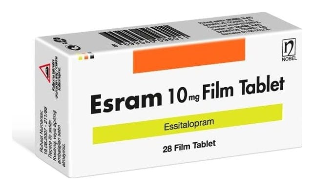

Esram 10 mg Tablet, 28 Adet

Ne için kullanılır
KT · Bölüm 1 ESRAM 10 mg film kaplı tabletler, her biri 10 mg essitalopram içeren oval, bir yüzü derin çentikli diğer yüzü 10 yazılı, beyaz renkli, film kaplı tabletlerdir. Tabletler eşit yarımlara bölünebilir. ESRAM 28 tabletlik ambalajlarda piyasaya sunulmaktadır. ESRAM essitalopram içerir. Bu ilaç, depresyon (majör depresif durumlar) ve agorafobili (açık alan korkusu) veya agorafobisiz panik bozukluğu, sosyal anksiyete (kaygı) bozukluğu ve yaygın anksiyete bozukluğu ve obsesif-kompulsif (saplantı-zorlantı ) bozukluk gibi anksiyete bozukluklarında kullanılır. Essitalopram, selektif serotonin geri alım inhibitörleri (SSRIs) olarak adlandırılan bir antidepresan grubuna dahildir. Bu ilaçlar beyindeki serotonin sistemini etkileyerek serotonin düzeylerini arttırırlar. Serotonin sistemindeki bozukluğun, depresyon ve benzeri hastalıkların gelişiminde önemli bir faktör olduğu kabul edilmektedir.
İyi hissetmeye başlamanız birkaç haftayı bulabilir. Durumunuzda iyileşme görmeniz biraz
zaman alsa bile, ESRAM kullanmaya devam ediniz.
Eğer kendinizi daha iyi hissetmezseniz ya da daha kötü hissederseniz, bunu bir doktorla konuşmalısınız.